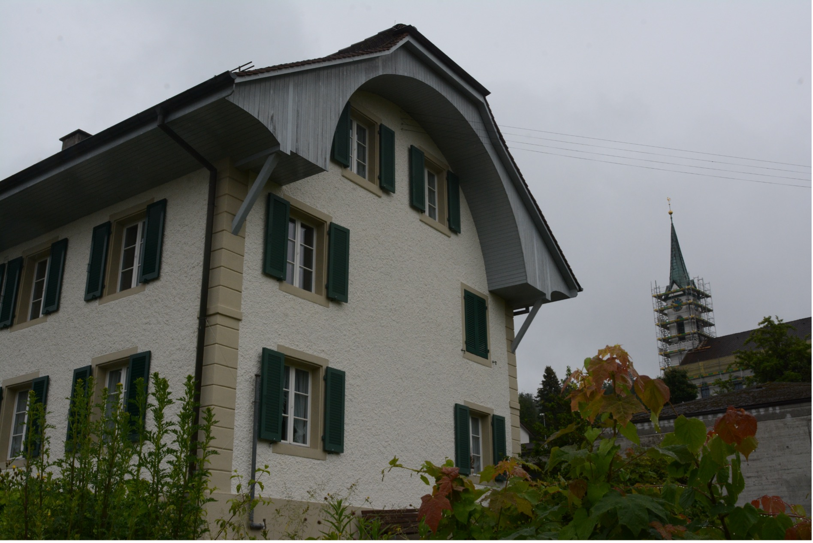
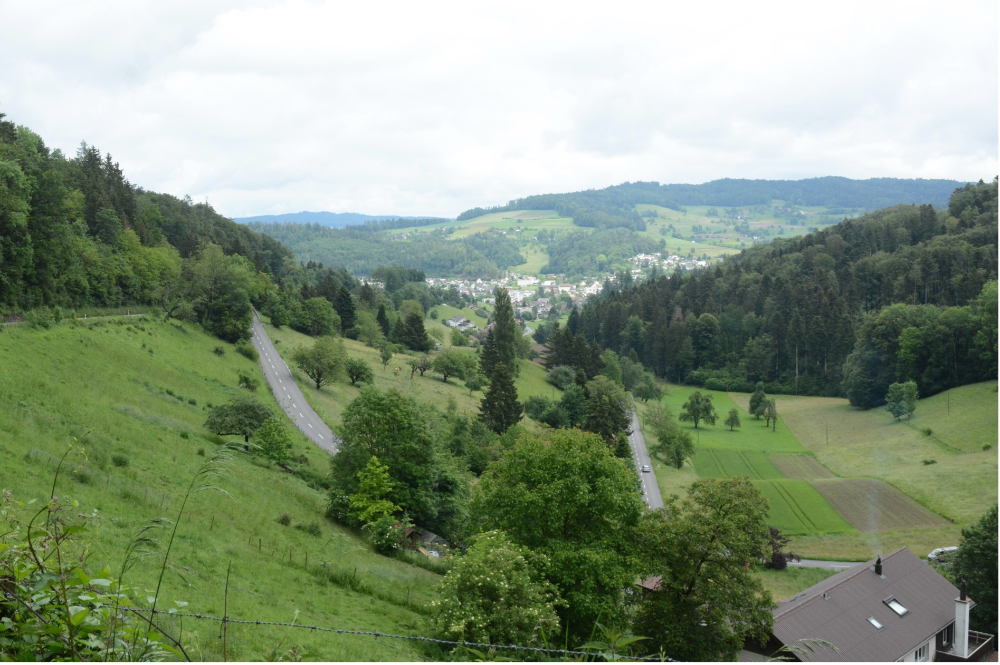

David Plüss zum 60. Geburtstag
Zu seiner theologischen Bedeutsamkeit ist das Dorf Safenwil im Kanton Aargau nicht durch ein architektonisches Juwel, auch nicht durch eine lokale religiöse Tradition, etwa ein Marienwunder, wohl aber durchaus sozusagen ‹wie die Jungfrau zum Kind› gekommen. Nämlich durch das zufällige Faktum, dass die Kirchenpflege der reformierten Kirchgemeinde im Jahr 1911 als ihren neuen Pfarrer Karl Barth wählte. Dieser wirkte dort zehn Jahre lang und startete von hier aus eine neue theologische Bewegung, die im 20. Jahrhundert ihresgleichen sucht.
Pfarrhaus und Kirche Safenwil. (Foto: Georg Pfleiderer)
Karl Barth (1886–1986) ist der wohl berühmteste Schweizer Theologe des
20. Jahrhunderts, wenn nicht seit den Tagen Zwinglis und Calvins. Sein
überaus umfangreiches theologisches Lebenswerk ist an Bedeutung kaum zu
überschätzen. Auch fast 60 Jahre nach seinem Tod erscheint in der Regel
immer noch Jahr für Jahr ein neuer Band der Karl Barth-Gesamtausgabe;
und jedes Jahr werden weltweit etliche Dissertationen, sonstige Bücher
und sehr viele Aufsätze über seine Theologie verfasst. Aus Anlass des
100-Jahrjubiläums von Barths Furore machen dem theologischen Erstling,
seinem Römerbriefkommentar von 1919, wurde im «Karl Barth-Jahr 2019»
vielfältig an Barths theologische, kirchliche und politische Bedeutung –
nicht zuletzt als theologischer Anführer des Kampfs der «Bekennenden
Kirche» gegen den Nationalsozialismus – erinnert. Illustrativ für Barths
weit über Theologie und Kirche hinausreichende zeitgeschichtliche
Bedeutung mag die Tatsache sein, dass sein Konterfei 1959 das Cover des
deutschen Nachrichtenmagazins «Der Spiegel» und 1962 dasjenige des «Time
Magazin» zierte.
1911, im Jahr seiner Berufung nach Safenwil, war von solcher Berühmtheit
natürlich noch nichts zu sehen. Barth war in Basel als Sohn einer
grossbürgerlichen Mutter und eines Pfar-rers und späteren
Theologieprofessors geboren worden und in Bern aufgewachsen. Dort sowie
in Berlin, Tübingen und Marburg hatte er Theologie studiert, war in Genf
als Hilfsgeistli-cher (pasteur suffragant) tätig gewesen und trat nun
als 25-Jähriger – mit einem Dissertati-onsprojekt in der Aktentasche –
seinen Dienst in der ländlich geprägten reformierten Kirch-gemeinde an.
Von den 1625 Einwohnern, die das Dorf damals zählte, waren 1487
reformier-ten Glaubens, unter ihnen 318 Schulkinder. Es war damals erst
45 Jahre her, dass das Dorf eine selbständige Kirchgemeinde geworden war
und durch Unterstützung einer ortsansässi-gen Unternehmerfamilie eine
eigene Kirche bekommen hatte. Nahe bei dieser stand das grosse
Pfarrhaus, in das der junge Theologe, zunächst noch alleinstehend, im
Sommer 1911 einzog. Nach der Hochzeit 1913 gründete er dort zusammen mit
Nelly Hoffmann (1893-1976) in den Jahren des Ersten Weltkriegs eine
rasch wachsende Familie, die Leben in das geräu-mige Pfarrhaus brachte.
Der rote Pfarrer von Safenwil
Kirche und Pfarrhaus stehen heute noch und sind, zumindest äusserlich,
wenig verändert. Das gilt nicht für das übrige Dorf, das sich seit
damals, insbesondere seit dem Bau der nahen Autobahn 1967, rasant
verändert und auf heute rund die dreifache Einwohnerzahl vergrössert
hat, von der ein knappes Drittel nicht das Schweizer Bürgerrecht
besitzt.
Vor dem Ersten Weltkrieg waren das Dorf und seine Umgebung ländlich,
aber zugleich durch ortsansässige Holz- und vor allem Textilunternehmen
industriell geprägt, in denen ein Gross-teil der Männer, aber auch der
Frauen, arbeitete. Die in vielen Hinsichten erbärmliche soziale
Wirklichkeit der damaligen Industriearbeit mit ihren enormen
Arbeitszeiten von 60 oder mehr Wochenstunden und ihren zerstörerischen
Folgen für Gesundheit und Familienleben bekam der junge Pfarrer
gleichsam hautnah zu spüren. Aufgrund der ihm schon damals eigenen
in-tellektuellen Beweglichkeit und Sensibilität mutierte Barth innert
weniger Wochen und Monate vom bürgerlich-liberalen Stadttheologen zum
wortmächtigen Verfechter eines religiösen So-zialismus, der damals –
unter Führung von Leonhard Ragaz (1868–1945) in Basel und Her-mann
Kutter (1863–1931) in Zürich – in der reformierten Pfarrerschaft der
Schweiz bereits vergleichsweise verbreitet war. Bald engagierte sich
Barth in der Erwachsenenbildung der Safenwiler Arbeiterschaft, hielt im
Dorf und in umliegenden Gemeinden religiös-soziale Vorträ-ge und führte
in der regionalen Presse heftige literarische Fehden mit einem Spross
der ein-flussreichen Unternehmerfamilie Hüssy. Jesus, so erklärte er
diesem, würde den Kapitalis-mus scharf kritisieren und sich an die
Spitze der sozialdemokratischen Bewegung setzen, die trotz ihrer
atheistischen Tendenzen dem Gottesreich wesentlich näherstehe als das
Besitz-bürgertum mit seiner zur Schau getragenen Kirchenfrömmigkeit.
Die Revolution der Dialektischen Theologie
Wäre Barth jedoch ‹nur› der «rote Pfarrer von Safenwil» geblieben, als der er im Aargau bald teils verschrien, teils bewundert war, würde das nicht erklären, warum «Safenwil» ein Name ist, der in der internationalen Barthforschung, wie sie heute sehr stark auch in der angelsäch-sischen Welt, aber auch etwa in Südkorea betrieben wird, einen fast mythischen Klang hat. Denn in Safenwil ereignete sich jene zweite theologische Wende des jungen Theologen Karl Barth, die diesen nach dem Ende des Ersten Weltkriegs zum Anführer einer neuen sogenann-ten «Dialektischen Theologie» machte. In der Studierstube unterm Dach des Pfarrhauses und teilweise auch unter dem Apfelbaum im Safenwiler Pfarrgarten war die Erstauflage von Barths Kommentar zum Römerbrief des Apostels Paulus entstanden. Darin entwarf der junge Schweizer Pfarrer eine theozentrische Theologie, die das paulinische Evangelium nicht histo-risch-kritisch einordnet, sondern als Folie für eine neue Offenbarungstheologie für die vom Krieg erschütterte Gegenwart benützt. Insbesondere seit der revolutionären, existenzialisti-schen Zweitauflage dieses Buches von 1922 trat diese Theologie einen Siegeszug durch die deutschen Universitäten an, revolutionierte die theologische Welt und konnte durch ihren Wi-derstand gegen den Nationalsozialismus in den 1930er und 1940er Jahren nachhaltige orien-tierende Bedeutung für Pfarrerschaft, Kirche, aber auch die Gesellschaft insgesamt gewin-nen.
Der Barth-Thurneysen-Weg als theologische Wanderung
Diese mit grosser intellektueller Kraft und ebenso grosser rhetorischer Verve vorgetragene neue dialektische Theologie hätte Barth wohl kaum im Alleingang zu konzipieren vermocht. Sie entstand vielmehr in engmaschigen Dialogen mit Eduard Thurneysen, der seit Mai 1913 als Pfarrer in der nicht weit entfernten Aargauer Gemeinde Leutwil wirkte. Den Weg dorthin, für den Google Maps heute 4.5 Stunden angibt, legten beide in den ersten beiden Jahren mit-unter mehrfach in der Woche zu Fuss zurück. Ab 1915 verfügten sie dafür immerhin über Fahrräder.
Blick vom Böhler Richtung Unterkulm. (Foto: Georg Pfleiderer)
Zur Erinnerung an diesen Weg und die beiden Theologen entwickelte die
Aargauer Kirche im Jahr 2019 den «Barth-Thurneysen-Weg», der von
Safenwil über Uerkheim, Schöftland und Unterkulm nach Leutwil führt. «In
den fünf reformierten Kirchen auf diesem Weg erinnern…», wie in der
Wegbeschreibung im Internet nachzulesen, «…Tafeln und Zitate an die
beiden grossen reformierten Theologen des 20. Jahrhunderts. Die fünf
Stationen auf dem Weg nehmen verschiedene Themen auf, die Barth und
Thurneysen miteinander auf den Wanderungen und in ihrem intensiven
Briefwechsel immer wieder diskutierten. Auf jeder Tafel ist passend zum
Thema auch ein Zitat aus diesem Briefwechsel abgedruckt.»
Bei genauer Analyse zeigt sich, dass auch Barths dialektische
Römerbrieftheologie selbst den Charakter einer literarischen Wanderung
trägt, die auf das Einverständnis, sozusagen das Mitwandern, der
LeserInnen unter Ausschluss einer blossen Zuschauerhaltung zielt. Vom
schroffen Auftakt über die Unmöglichkeit menschlicher Gotteserkenntnis
an sich unter dem Titel «Die Nacht» spannt sich der
offenbarungstheologische Bogen über Kapitel wie «Der Tag», «Die Gnade»,
«Der Geist», «Eine Hoffnung» bis zu «Die Bewegung». Im Mitdenken dieser
dialogisch-dialektischen Theologie formiert sich so eine neue
theologische Bewegung von Autor und Leser:innen. Im letzten Kapitel,
«Der Apostel und die Gemeinde», in dem Barth die Hoffnung des Apostels
aufnimmt, die Gemeinde in Rom möglichst bald auch einmal leiblich zu
sehen, heisst es: «Ich freue mich darauf, denn was kann es für Menschen,
die durch eine gemeinsame Sache verbunden sind, Nötigeres und
Erfreulicheres geben, als sich in die Au-gen zu sehen, sich Einer am
Wachstum des Andern zu erquicken und sich schliesslich auch leiblich
wandernd im muntern Rhythmus einer inneren und äusseren Bewegung über
Berg und Tal das Geleite zu geben!» In Barths Handexemplar ist an dieser
Stelle am Rand notiert «Böhler!». Das ist der Name des Passübergangs
zwischen Schöftland und Unterkulm.
Heute ist die Passage über die Böhlerstrasse die verkehrsreichste der 19
Kilometer langen, abwechslungsreichen Wanderung durch den schönen
Aargau. An den berühmten Bewohner des Safenwiler Pfarrhauses erinnert
daselbst aussen eine Steintafel und innen, in der ehema-ligen
Studierstube, ein kleines sehenswertes Museum.
Infotafel auf dem Barth-Thurneysen-Weg. (Foto: Georg Pfleiderer)
Georg Pfleiderer lehrt Systematische Theologie/Ethik an der Universität Basel.
Weitere Artikel von {{ author.author }} finden Sie hier:
Zur Vertiefung:
- Barth, Karl; Thurneysen, Eduard: Briefwechsel, Bd. 1 (1913–1921), bearbeitet und hrsg. von Eduard Thurneysen, Zürich 1973.
- Hilfiker-Schudel, Rosa: Kirchen- und Dorfgeschichte von Safenwil, Safenwil 1966.
- Pfleiderer, Georg: Progressive Dialektik. «Zur Entwicklung von Karl Barths theologischem Denken im Zeitraum des Ersten Weltkriegs», in: Ders., Harald Matern (Hg.): Theologie im Umbruch der Moderne. Karl Barths frühe Dialektische Theologie, Zürich 2014, 81–103.
- Tietz, Christiane: Karl Barth. Ein Leben im Widerspruch, München 2018.
- Barth-Thurneysen-Weg, verfügbar unter: www.ref-kirchen-ag.ch/wege/barth-thurneysen-weg (1.7.2024)